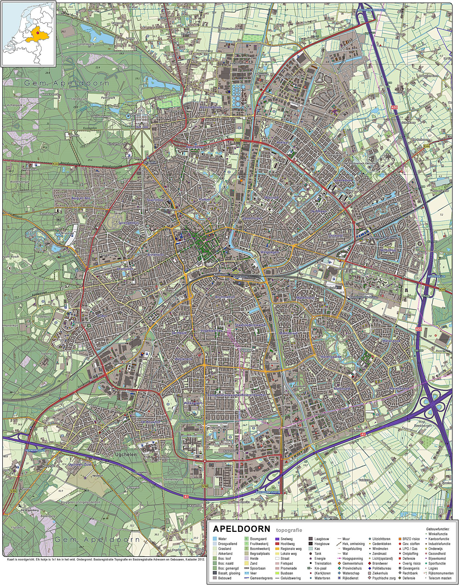

Apeldoorn is een gemeente op de Veluwe in de Nederlandse provincie Gelderland. De hoofdplaats van de gemeente is de gelijknamige stad. Apeldoorn staat met een oppervlakte van 341,15 km² op de vijftiende plek van grootste gemeentes van Nederland. Apeldoorn is met Deventer en Zutphen een van de hoofdplaatsen in een samenwerkingsregio van gemeenten in de provincies Gelderland en Overijssel die bekendstaat als de Stedendriehoek. Apeldoorn staat bekend om zijn stadsparken en zijn 'groene' karakter. Kenmerkend is de Apeldoornse huisjes-structuur, met veel monumentale en vrijstaande woningen en relatief weinig hoogbouw. Met ongeveer 100.000 arbeidsplaatsen[2] is Apeldoorn een belangrijk werkgelegenheidscentrum in Midden- en Oost-Nederland.
